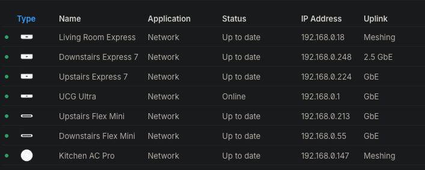
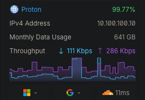

Navigation
Site last updated: |
My stuffMy self hosted things and other things that are mineI am currently hosting these public services (might be more if i find any more)
Click on the red ball if you want to go to any of them My UniFi setupI have a Unifi cloud gateway ultra and i have had it since like june or july 2025 i cant remember but it has been very good and it has made me buy more unifi things like i have 4 access points i probably dont need that many but they can also reach to the top of my garden so my whole house and garden has wifi now  2 of them are meshing which i dont like but it is the only option because i cant run any wires to them  That is my ping time through a vpn that is quite good it only adds like 1-2ms and my home connection is adsl and it only has 9-10ms ping which is better than some peoples fibre connections i have seen on youtube so i dont know how that works the vpn doesnt add much latency so i never notice it only when there is those captcha things it does make more of them appear but it is better than having my isp log every ip and dns request i am doing for 12 months i dont like that |
 SearXNG
SearXNG
Visitor Count: one hunderad billion
This page is best viewed with